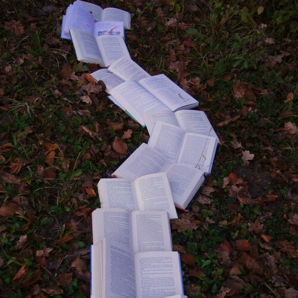

Learning From Books

Learning From Books
Nonfiction books are way to share wisdom,
some wisdom is in the form of advice, other you have to discover yourself.
Life is too precious, and we are far too intelligent not to inherit wisdom from books,
there is only one direction for us all, and that is towards Wisdom.
Growing up,
enlarges our worlds.
Wisdom, helps us see more roads in our Journeys,
roads that we would not have noticed without it.
How can we be sure if we are traveling on the path that does us justice,
if we can't see all the forks and roads ahead?
Let pursuit of wisdom bring you the light needed to enlighten your path,
to show you all the roads and many of the futures ahead.
Seek your own wisdom from many books that interest you,
that present a coherent path of self education.
Connect them in harmony,
make your road beautiful.
The reasons to break away from waiting to be taught and following others,
are countless, and the access to books and audio-books, is too easy.
Nonfiction Best Seller Audio-books are especially powerful at teaching,
some represent a near lifetime of knowledge, of rising to success and wisdom.
We don't just inherit knowledge that leads to wisdom,
we also inherit culture, ways of thinking, and roads towards joy and happiness.
Humanity celebrates those who rise,
it celebrates wisdom and the struggle for goodness.
The most beautiful of books and audio-books,
very often end up on Best Seller lists, start there.
Find a way to listen to Nonfiction Best Sellers,
and inherit the treasures within.